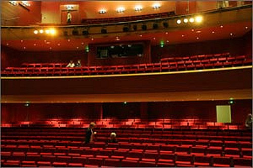
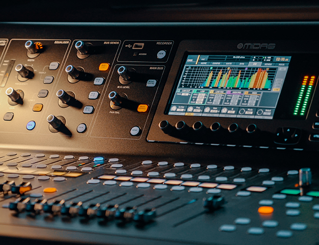
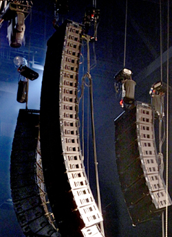

Régisseur son à la Maison de la Culture de Clermont Ferrand Salle de 1400 places. Tout le son traverse un réseaux par le protocol Ethersound( audio numérique par ip
Travail : instalation de systeme son, regie de spectacle, regie video et instalation, Prise de son, Mixage live
CL5DanteEthesoundL.a Nerwork Manager

Régisseur Son
Theatre Gabrielle Robinne
Régisseur son au Theatre Gabrielle Robinne de Montluçon
Salle de 700 Places avec systeme son analogie.
Travail : Installation Son Analogique et Numérique, Installation Lumiere Trad, Régie video
Son AnalogiqueLS9,QL1Lumieres

Ingénieur du Son
Silver Plate Studio
Ingénieur du Son au Studio Silver Plate. Enregistrement, Mixage et Mastering.
Pro ToolsFl StudioMidas M32REW,Flux,SMaart

Régisseur son Intermitant
Intermitant Régisseur son
Intermitant Régisseur Son pour diverses spectacles
Instalation de systeme line aray, calage avec smaart, régie son pendant les spectacles